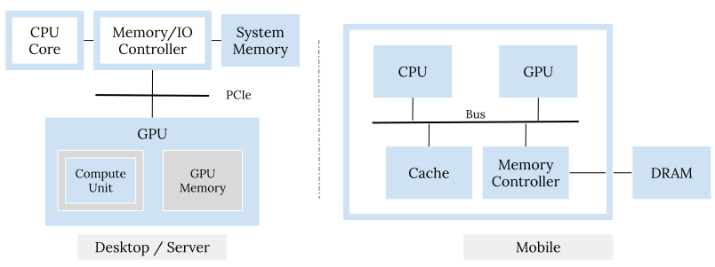

Vulkan is designed to be both a graphics and compute API. However, there is no formal definition of the compute subset from the Khronos group, the industry consortium behind Vulkan. The unified specification of Vulkan does not help here either as it contains everything, both graphics and compute. Unlike the complicated graphics subset, the compute subset is actually quite straightforward and clean. So in this blog post I try to explain what Vulkan compute is, from my point of view.
While I’ll inevitably discuss Vulkan compute API calls, the goal here isn’t to
provide a comprehensive list for all of them and explain their various
parameters and Vk*CreateInfo structures. We can find them readily in the
specification. The goal isn’t to provide a tutorial on building an application
with Vulkan compute, either1. Rather, I’d like to sketch out the
categories and key API calls to introduce a structure. Hopefully it can serve
as an overall picture to help navigate through the details. This also means
this blog post is introductory.
Okay, enough as a preamble. 😊 Putting the one-liner summary out first: Vulkan compute is the subset of Vulkan API calls that handles GPU discovery, resource management, compute pipeline management, synchronization, and object lifetime management.
GPU in the Computer System
Before moving onto explaining details about Vulkan compute, it would be beneficial to quickly refresh ourselves about the organization of the GPU in a typical computer system to understand what is needed for interacting with the GPU. That can explain why certain API calls exist at all. If this is already crystal clear for you, please feel free to skip this section.

The CPU sits in the center and orchestrates operation of various hardware in a computer system. GPUs, either for desktop/server systems, where we typically see discrete ones, and for mobile/embedded systems, where we typically see integrated ones, are just additional specialized computation devices in this architecture. GPUs have their own processors to execute commands and memory hierarchy to hold data. These characteristics mean that GPUs can execute programs asynchronously from the CPU. But it cannot do that on its own; it needs to receive workload from the CPU.
GPU API
Therefore, to utilize the GPU, the CPU needs to 1) discover it, 2) prepare resources and program for it, 3) compose and send workload to it to process, and 4) synchronize with it to know the progress. This is basically the functionality categories one would expect to see from a GPU API, which is mainly executed on the CPU and meant to be an abstraction of the above. Also, because the GPU has a highly parallel structure with many compute units, it also needs to 4) synchronize internally. You can pretty easily find calls in the above categories in various GPU APIs, either for graphics or compute; Vulkan is no exception here.
However, due to the explicit nature, Vulkan API surface area is, unsurprisingly, larger than other GPU APIs. So you’ll find more API calls per the above category in Vulkan. Also, for CUDA/OpenCL-era APIs, the GPU driver internally manages a global context for an application and tracks the lifetime of various objects corresponding to GPU resources. But for Vulkan, in exchange for low overhead and explicit control, the responsibility lies on the shoulders of developers. So we would also need to manually 5) manage GPU object lifetime.
Graphics vs. compute API
Note that the above categories are common to both Vulkan graphics and compute (as both graphics and compute are just workload to GPU). What differs is the details in each category, where graphics is typically much more complicated than compute.
Today even though we can render fabulous scenes in AAA games, we are still mainly in a stage where shortcuts and approximations (e.g., rasterization) are taken, because generating geometry primitives and lighting in the most natural way (pure ray tracing) is still an overwhelming amount of computation that exceeds today’s GPU capabilities. This weighs on the graphics pipeline and API. As examples, we need to have fixed-function stages (input assembling, rasterization, etc.), trading flexibility for performance; we need to support various “tricks” (e.g., MSAA) directly in the API, burdening the API.
- For GPU discovery, graphics additionally needs to consider lots of different image formats and presentation constraints.
- The program is where graphics and compute differ the most. As said in the above graphics uses the graphics pipeline, which is a mix of fixed-function and programmable stages. It incurs huge complications here as we need to both configure those fixed-function stages and provide shaders for various programmable stages. And they need to match the interface. The compute pipeline is much more simpler: it just contains one programmable shader (or kernel in CUDA/OpenCL terminology).
- For synchronization, the graphics and compute pipeline both have the same set of underlying synchronization primitives. The graphics pipeline additionally provides render passes that provide implicit synchronization guarantees to simplify usage.
Basically, the majority of API calls in Vulkan are shared by both graphics and compute. That makes sense as a typical graphics renderer also use the compute pipeline for async compute. Although, compared to the messiness of the graphics pipeline, the compute pipeline is much more simpler and cleaner. That is to say, another way to define Vulkan compute is, Vulkan API minus all graphics specific craziness. 😛
Vulkan Compute API
Before going into details about each category, I’ll first explain the overall interaction between a Vulkan application and the Vulkan system, in case it isn’t immediately obvious.
Application-system interaction
A Vulkan application interacts with the Vulkan system via a Vulkan instance, which contains application-specific states. The application queries available GPUs in the system and gets a list of physical devices. Then the application goes on querying available functionalities from these physical devices and chooses one or many of them to create logical devices. A logical device is the uber object that the application asks for allocating resources, and compiling and executing programs.
A Vulkan device exposes one or more queues, which is an abstraction of compute units on the GPU. Workloads (binding resources and program and executing the program) are recorded into command buffers and submitted to queues. Different queues may process work asynchronously; so synchronization is needed to guarantee dependency correctness across queues; that’s semaphores. Even inside the same queue, commands may be executed out of order, so synchronization is also needed here. (This is one of the places Vulkan differs significantly from CUDA/OpenCL, where by default all commands run and complete in submission order.) That’s mainly pipeline barriers. The application can know the progress on the GPU from the CPU via fences.
The Vulkan specification can be pretty daunting with all those details for the most of the time; but I find its “execution model” section a good read to get a high-level understanding of the system.
In the following sections, I’ll explain each API category. For mentioned API calls, important bits are highlighted and I’ll also embed a link to the specification/manpage so that you can find more details. Note that Vulkan API follows certain conventions:
- All Vulkan API calls have the
vkprefix. They are typically of the formvkActObject, whereActis some action like:Enumerate/Get: just for querying (static) information from the system.Create/Destroy: for light-weight GPU resource handles.Allocate/Free: for heavy-weight GPU resource management.
- All Vulkan structures have the
Vkprefix.Vk*CreateInfostructures are fed intovkCreate*API calls to specify arguments for creation. They typically have two common leading fields:sType(for identifying the structure type) andpNext(for future extension purpose).
GPU discovery
Vulkan is open and scalable. We can have multiple Vulkan implementations in the same system. For example, nowadays in a laptop, it’s common to see an integrated GPU plus a discrete GPU; they can both support Vulkan. Different Vulkan implementations can be of different architectures from different hardware vendors (AMD, ARM, NVIDIA, Qualcomm, etc.), targeting from mobile/embedded to desktop/server scenarios.
For such a wide range of coverage, Vulkan have a rich set of functionality probing API calls to enumerate devices and discover their limits (implementation-dependent minimums/maximums of certain properties), features (core-spec level optional functionalities that may not be supported by all implementations), and extensions (a set of functionalities supported by one or more vendors).
Those API calls typically have vkEnumerate/vkGet as their prefix.
Important ones include:
vkEnumeratePhysicalDevices: enumerates all Vulkan implementations in the system.vkGetPhysicalDeviceProperties22: returns a huge structure containing various device properties and limits. We can chain the structures for Vulkan 1.0, 1.1, and 1.2 viapNextto query properties like vendor ID (since 1.0), device name (since 1.0), subgroup size (since 1.1), subgroup supported operations (since 1.1), floating point rounding mode (since 1.2) and important compute limits like max compute shared memory size (since 1.0), max compute workgroup sizes (since 1.0).vkGetPhysicalDeviceFeatures2: similar tovkGetPhysicalDeviceProperties2, but for querying core-spec level optional features. We can also chain the structures for Vulkan 1.0, 1.1, and 1.2 viapNext. Interesting features include float64/int16/int64 support for computation (since 1.0), variable pointer support (since 1.1), float16/int8 support for computation (since 1.2), Vulkan memory model support (since 1.2), buffer device address support (since 1.2).vkEnumerateInstanceExtensionProperties/vkEnumerateDeviceExtensionProperties: queries instance/device level Vulkan extension support.vkGetPhysicalDeviceQueueFamilyProperties2: queries the characteristics about queue families, like whether it has transfer/compute capabilities.vkGetPhysicalDeviceMemoryProperties2: queries the memory characteristics, like available memory heaps (for distinct banks of physical memory) and types (for different use scenarios, cached/uncached/etc., on top of a specific heap).
These API calls are typically invoked at the very beginning of an application as we try to discover available Vulkan implementations and its characteristics, select one to create instance/device and then get a proper queue out of it:
vk{Create|Destroy}Instance: creates/destroys Vulkan instances. When creating we need to provide information about the application and request what Vulkan instance extensions to enable.vk{Create|Destroy}Device: creates/destroys Vulkan logical devices. Here we specify what device extensions to enable and how many queues to create and their relative priorities.
vkGetPhysicalDeviceMemoryProperties2 is sort of an outlier here as it
interacts with buffer allocation, which is explained in the next section.
Resource and program preparation
There are generally two types of resources in Vulkan: buffers (for unstructured bag-of-words data) and images (for structured data with some format). But I won’t touch images too much in this blog post. They are a major source of complication. They can be used in ML vision models but still it’s not that common in compute.
For buffers, its memory and handle object are detached in Vulkan for explicitness and clear cost model, as memory allocation is costly and different applications may approach it very differently. So it’s better to avoid bundling them together to stifle choices.
Memory allocation
vk{Allocate|Free}Memory: creates/frees memory. For better performance, normally we’d like to perform a large allocation and then sub-allocate.vk{Map|UnMap}Memory: maps allocated host-visible memory to get an CPU side pointer so we can read or write / unmaps the CPU side pointer after reading or writing.vk{Flush|Invalidate}MappedMemoryRanges: flushes/invalidates mapped memory range.
vk{Map|UnMap}Memory and vk{Flush|Invalidate}MappedMemoryRanges are also
examples of Vulkan explicitness. They reflect GPU architecture characteristics.
GPU might have its own dedicated memory. Getting a CPU side pointer to an
allocation there would mean letting the kernel perform the page mapping and
sharing between the application’s and kernel drivers' address spaces.
Also, due to the various levels of caches, writes on either CPU or GPU may not
necessary be immediately available or visible to the other.
So we need flushing (for CPU → GPU) or invalidating (for GPU → CPU). I’m
certainly oversimplifying here as there are lots of details behind, which
this blog post gives a great explanation.
Buffer object and binding
vk{Create|Destroy}Buffer: creates/destroys a buffer object. When creating a buffer object, aside from its size, we also need to indicate its usage so that drivers can optimize accordingly.vkGetBufferMemoryRequirements2: queries the memory requirements (e.g., memory type, alignment), for a specific buffer.vkBindBufferMemory2: binds a buffer object to some concrete backing memory.
The above are API calls for managing buffer resources. Next let’s look at the program side, which is composed by a compute pipeline.
Descriptor and compute pipeline
The compute pipeline is very simple and clean compared to the graphics pipeline. It just contains one programmable compute shader stage. Vulkan shaders are required to be expressed in the SPIR-V binary format.
The compute shader references buffer resources that must be provided by the Vulkan runtime. These buffers are in binding “slots”; each slot has a binding number, and slots are organized into different sets. The compute pipeline (containing only the single compute shader) describes its buffer usage needs as a pipeline layout, which contains multiple descriptor set layout. Each descriptor is a handle to some buffer resource from the shader’s perspective.
Descriptors provide another level of indirection, which allows detaching the compute pipeline from the concrete buffer resources. So that we can use the same compute pipeline with different buffers. This helps to amortize the cost of compute pipelines as creating them means compiling SPIR-V in the driver to GPU ISA. That can be costly.
Before executing, the Vulkan runtime needs to bind concrete sets of descriptors that matches the compute pipeline layout. Descriptors are concrete objects in the GPU (as they need to be allocated inside the GPU driver); so we use pool objects to amortize the cost of allocation.
vk{Create|Destroy}DescriptorSetLayout: creates/destroys the layout for a descriptor set. When creating, we need to specify the descriptor type for each taken binding number. For buffers, it’s typicallyUNIFORM_BUFFERorSTORAGE_BUFFERor their_DYNAMICvariants.vk{Create|Destroy}PipelineLayout: creates/destroys the layout for the whole compute pipeline. This basically points to a few set layouts.vk{Create|Destroy}DescriptorPool: creates/destroys descriptor pools. We need to specify the maximal number of sets it can support and the maximal number of descriptors per type.vk{Allocate|Free}DescriptorSets: allocates/frees descriptors from/to the pool.vkUpdateDescriptorSets: really associates sets of descriptors to concrete buffer resources. Remember that descriptors are just handle objects. They need to be backed by concrete buffers before being used in execution.
With the descriptor set layouts, we can then create the compute pipeline:
vkCreateShaderModule: creates a shader module from a SPIR-V blob.vkCreateComputePipelines: creates a compute pipeline. We need to specify the compute shader’s SPIR-V shader module and the pipeline layout.vkDestroyPipeline: destroys a compute pipeline.
Putting it together
Okay, thus far quite a few Vulkan objects were discussed. So it’s worth a graph to show their relationship 😊:
Workload communication
Like the CPU, the processor inside the GPU also consumes a stream of commands. These commands are prepared by the CPU and recorded in command buffers in Vulkan. Really in Vulkan, command buffer is just an abstraction for CPU to handle workload generation, possibly in a multi-threaded fashion. There is no command buffer concept on the GPU (if we disregard the real buffer storage needs for these commands) as the GPU just sees a stream of commands.
Command buffers require concrete resources from the GPU so they have
dedicated pool objects to help amortize the cost of allocation. Commands can
be recorded into the command buffer after vkBeginCommandBuffer. The typical
sequence is binding the compute pipeline (for the program to run), binding
the descriptor sets (for referencing buffer resources), and dispatch (to
kick off the execution). Then vkEndCommandBuffer stops recording and puts
the command buffer in a pending state that is ready to be submitted to the
queue via vkQueueSubmit.
vk{Create|Reset|Destroy}CommandPool: creates/resets/destroys a command pool. A command pool is associated with a particular command queue and the command buffers allocated from it can only be submitted to that queue.vk{Allocate|Free}CommandBuffers: allocates/frees command buffers from/to the pool.vk{Begin|End}CommandBuffer: begins/stops recording command buffer.vkCmdBindPipeline: binds compute pipeline to the command buffer.vkCmdBindDescriptorSets: binds the descriptor sets to the command buffer.vkCmdDispatch{|Base|Indirect}: dispatches the workload.vkQueueSubmit: submits command buffers to the queue to kick of async execution on the GPU.
Note that vkQueueSubmit can take multiple command buffers together, as
queue submission is a costly action so worth amortizing. vkQueueSubmit
is also where we can attach synchronization primitives, to be explained in the
next section.
Synchronization
Synchronization is probably one of the most opaque topics in Vulkan. I will just give an introduction here and won’t go into details. (Explaining them well can take many blog posts! You can already find fantastic existing ones like this one, this one, and this one).
One important thing to remember is that by default in Vulkan commands can execute out of order, so we would need explicit synchronization for correctness. Another important thing to remember is that by default Vulkan does not guarantee memory coherency (as the underlying hardware does not!), so we would need to have explicit memory barriers.
In general, there are multiple synchronization primitives to satisfy different needs:
vk{Create|Destroy}Fence: creates/destroys fences, which are used to wait for the GPU on the CPU.vk{Create|Destroy}Semaphore: creates/destroys semaphores. One thing worth noting here: there is a difference between binary semaphores and timeline semaphores. The former is used for cross-queue GPU internal synchronization but is subject to many restrictions. The latter is a more powerful recent addition to Vulkan that lifts lots of restrictions and sort of unifies synchronization primitives by covering both CPU and GPU synchronization needs.vkCmdPipelineBarrier: inserts into the command buffer a pipeline barrier, which are used to synchronize commands in the same queue.vk{Create|Destroy}Event: creates/destroys events. Events are also called “split barriers”. It has separate signalling and waiting stages. And both the CPU and GPU can signal/wait. So we have a bunch of API calls here:vkCmd{Set|Reset}Event: signals/resets on GPU;vkCmdWaitEvents: waits on GPU.vk{Set|Reset}Event: signals/resets on CPU;vkGetEventStatus: waits on CPU.
We can specify a list of semaphores to wait, a list of semaphores and one fence
to signal together with vkQueueSubmit.
And there are big hammers that just drain the whole queue or device:
vkQueueWaitIdle and vkDeviceWaitIdle. They shouldn’t really be used other
than the case where we exit the application.
GPU object lifetime management
The important GPU object lifetime management API calls were already discussed in the above sections. So nothing more specially here.
Summary
Phew. I tried to keep this blog post as a short introduction. But it still became somewhat lengthy. So thanks for reading it through! Hopefully it provides some help for understanding what Vulkan compute is. Just to re-iterate: Vulkan compute is the subset of Vulkan API calls that handles GPU discovery, resource management, compute pipeline management, synchronization, and object lifetime management. It is actually a very straightforward and clean API surface area, in my opinion.
This blog post does not cover all API calls that can potentially be used for compute. The Khronos Group previously released a very nice reference sheet for Vulkan 1.1. I modified it to remove all graphics specific API calls and put it here. You can find a more complete list of API calls and their parameters there.
-
If you are looking for a Vulkan compute tutorial, µVkCompute might be interesting to you. It’s meant for writing microbenchmarks in Vulkan compute. It provides a thin wrapper over Vulkan compute API calls. ↩︎
-
Note that I’m using the “v2” API call here and similarly for the following calls. These “v2” API calls are not much different from the “v1” ones; they just fixed the missing
pNextin “v1” structures to make them extensible. ↩︎